Neural Networks
Neural Networks have become a mainstay of modern machine learning. They're
especially interesting because of their basic and understandable components,
and their loose association with an idealized brain. They're easily implementable
on pytorch and tensorflow, both python based machine learning modules.

Neurons
The neuron is the basic building block of a neural network. Suprisingly,
the mathematical functions it employs are usually very simple. The prototypical neuron
simply multiplies all its inputs by a corresponding weight, sums up the products (it may add a bias as well),
and then outputs this sum after applying some activation function.

Activation Functions
The activation function employed by a neuron in a neural net is generally simple: both to aid
in computational complexity concerns when applying the model; and to streamline the
process of backpropogation, described later. Perhaps the two most commonly seen activation
functions are the classical logarithmic Sigmoid function and the more modern and widely
used rectified linear unit (ReLU).
Neural Network Basics
In between each intermediate layer of the neural network, the aggregation of
inputs can be seen as a matrix acting
on some input vector, as a natural extension of the single neuron case.
The activation function (assuming it's the same for all the neurons)
can then simply act on this transformed vector via distribution.

Backpropogation
Resources
Michael A. Nielsen has a great book on neural networks for free that can be
found here. Another
good, free, online resource is Goodfellow, Bengio, and Courville's book which
can be found here.